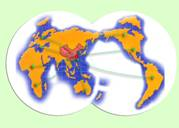
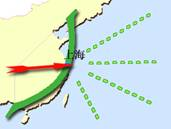
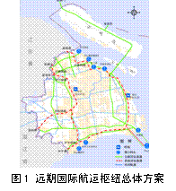
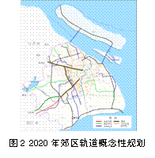
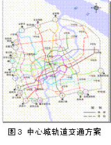

上海综合交通发展战略——战略举措深化 ( 2008年05月27日 )
上海综合交通发展战略——战略举措深化</FONT>
研究时间：2007年3月1日—2007年6月20日</P>


一、研究背景</P>
《上海综合交通发展战略》是根据市委、市政府要求，由市建交委组织相关部门共同研制、历时两年的重大项目，成果多次向市领导汇报，并已基本形成了统一认识。</P>
结合上海市第九次党代会提出的要求和精神，要加快推进“四个率先”，努力建设“四个中心”，《战略》进行了补充和完善，特别是围绕重大战略举措进行了深化。</P>
二、研究内容</P>
|
 |
（1）确保15米深水泊位规划35个，预留50个，确保各类泊位810个以上；建成洋山深水港铁路专线和100多公里高等级内河航道；加强多式联运建设，提高水水联运比重至30％；建设临港新城、金山嘴、宝钢等配套码头；临港新城建立铁路集装箱中心站和内河码头，外高桥设置联运换装点；确保洋山港对外18-24条车道，外高桥20条车道相联；实现港口运营市场化，加强同周边港口协调合作。</P>
（2）建成两机场7条跑道，确保100万架次/年以上的起降能力，预留120万架次/年的发展空间；近期建成浦东机场二期航站楼及第三条跑道，虹桥机场第二条跑道、第二航站楼；远期建成浦东机场第四和第五跑道，加强虹桥机场的航空枢纽功能，统筹协调同周边机场的分工合作，确立上海航空枢纽地位；建成2条轨道连接浦东机场，4条轨道连接虹桥机场；建成虹桥综合交通枢纽。</P>
2、构筑区域一体化交通网络，发挥中心城市综合服务功能，服务长三角，实现多功能、多层次、大规模的公铁复合运输网络。</P>
1）建成沪宁、沪杭高速铁路100公里，保持对外分散运输客流；远期增加沪镇、沪通普速通道，建设到洋山港跨海铁路；近期建设杨行集装箱中心站、闵行货场、改建桃浦货场，浦东铁路（平安－张庙），建设浦东铁路客站。</P>
2）增加高速公路通道由3个至8个；形成江苏方向9条、浙江方向3条等级公路通道；完成联系机场、港口的高速公路项目；建成与航空、铁路配套形的6个公路客运主枢纽；建成西北、西南2大内陆口岸型综合物流园区和浦东空港、外高桥、临港新城三大沿海口岸型综合物流园区。</P>
|
 |
1）建成200公里城际轨道和300公里市域轨道；形成沪宁、沪杭、沪湖宣三个方向城际轨道；创造城际轨道和市域轨道“共轨运营” 条件，沪湖宣方向城际轨道预先考虑共轨条件；加强市域轨道和城际轨道换乘枢纽建设，提高内外连通功能，如7号线与太仓方向、11号线与昆山方向、9号线与嘉善方向的城际轨道，往崇明方向保留不同轨道制式的衔接条件；延伸市区轨道100公里，3号、7号线向宝山，13号、14号线向嘉定，12号、17号线向青浦，15号、16号线向闵行等；形成新城之间轨道联系，增加西半环普铁，联系宝山、嘉定、青浦和松江。</P>
2）控制高速公路规模在800公里，形成“一环+一横+二纵+十一射”的路网格局；暂缓实施需求量较小的高速公路，如A3、A13、A17、A18；改造新城内部和近郊高速公路为快速路，适应城市化需要，如A5以东、A15可调整为快速路；增加松江至临港新城间干线通道，适应需求增长和布局调整；形成干线公路“轴向射线”布局，占全市公路的30%，覆盖所有新市镇；规划建设外围货运主通道，避免直接穿越中心城；加强公路客货枢纽建设，形成3个一级枢纽站，和22个二级以下枢纽站构成的枢纽网络；保持公路建设时序，2010年前主要干线C11、C21和次要干线D32的建设计划向后推迟。</P>

4、基本建成现代化基础设施，改善中心城交通状况，优化方式结构，提升服务质量，提高公交吸引力，减少道路交通拥堵。</P>
1）加大对公共交通投入，将公共交通纳入公共财政体系；继续应用市场杠杆作用，有效调节各类资源；实行低票价政策；持续大力推进轨道交通建设，近期建成410公里；提供3万辆高品质服务车辆，保持5万辆出租车规模；
2）完善快速路网络，扩充主次干道容量，加密支路；继续推进黄浦江越江设施和苏州河桥梁建设；推进重点交叉口立体化改造；确保路网密度达到6km/km2；近期形成高保障度的世博专用通道；近期落实公共停车场（库）49处，共11430个泊位；结合世博会，中外环线和轨道换乘枢纽建设公共停车设施；远期中心城停车泊位密度控制在2400车位/平方公里。</P>
5、提高交通管理信息化智能化水平。提高自主科技创新能力，依托交通信息平台，全面实现智能化管理目标。</P>
实现综合交通的信息整合及应用；搭建统一的信息平台，建立交通信息资源的共享机制；统一的交通信息分类与编码标准和信息技术应用标准；做好出行导航系统的规划和建设，重点发展车载导航产业；城市道路、高速公路和公路信息采集系统的信息化水平；建立信息化综合采集机制，提供全方位信息支持；运用各种信息服务手段提供全方位和全天候的交通信息服务；建设行车诱导、停车诱导、乘客出行诱导、不停车收费系统；建立统一结算和一票换乘的公共交通票务系统。</P>
6、实现交通节能减排，建设资源节约型、环境友好型城市，优化交通运输组织，实现车辆清洁能源，降低环境污染影响程度。</P>
鼓励研发推广交通节能新技术、新工艺、新设备，大力发展新能源技术；完善交通运输能源消费统计制度；实施交通节能财税政策，引导企业扩大节能技术应用，转变居民能源消费行为。</P>


地址：上海市静安区铜仁路331号11楼 邮编：200040 Web:site:www.scctpi.sh.cn
电话：（021）62477711 62890464 传真：（021）62472386 62892787
 沪ICP备11003425号-4
沪ICP备11003425号-4